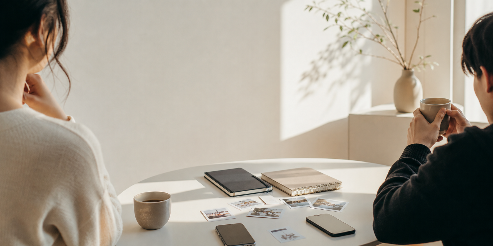

Memory
0130
The day ordinary became worth saving
Eva 说那天没有发生什么大事。Eric 却记得光线、路口和那句 “等一下，我想拍下来”。有些友情就是从愿意停一停开始的。
Read noteBestfriends: Eva Eric
写给 Eva 和 Eric 的私人博客，收藏那些被认真记住的日常、默契、 远距离问候和不需要解释的笑点。
A friendship journal
这里不是大声宣布关系的地方，而是把小事放大：一条凌晨消息、一张同框照片、 一次刚好懂你的停顿。像 Apple 的产品页一样干净，但内容更像两个人的秘密相册。
Stories
Eva 说那天没有发生什么大事。Eric 却记得光线、路口和那句 “等一下，我想拍下来”。有些友情就是从愿意停一停开始的。
Read note不是每一次聊天都要有结果。最好的朋友会把“在吗”变成一种灯， 亮起来的时候就知道有人在那边。
每个周末整理房间、同步歌单、交换本周最喜欢的一句歌词。 友情有时像系统更新，安静但会让整个人更顺。
最像我们的照片通常不是合影，而是桌上的两杯饮料、并排的影子、 被风吹乱的纸和来不及收起来的笑。
Moments

Archive
一条很轻的时间线，记录 Eva 和 Eric 从熟悉到默契的那些节点。
把 ericeva0130.ccwu.cc 变成一个只属于 Bestfriends 的安静空间。
一个数字开始有了私人意义，从此每次看见都会想起对方。
电影、歌、想去的地方和以后要补上的拥抱，全都被认真写下来。